1. Giới thiệu
Lần viết blog này (và có thể là những lần viết sắp tới), mình sẽ viết về vấn đề mà mình chuẩn bị phải làm luận văn về nó để tốt nghiệp (năm cuối rồi các bạn, thật là khổ). Thế nên, được sự góp ý của giáo viên hướng dẫn của mình, mình sẽ viết blog về các thuật toán học tăng cường (Reinforcement Learning) rồi kèm với đó là tìm kiếm chủ đề nghiên cứu phù hợp với mình. Mục tiêu của bài viết này sẽ cho các bạn một cái nhìn tổng quan nhất về các bài toán học tăng cường và giới thiệu 2 thuật toán cơ bản nhất trong lĩnh vực này là Policy Iteration và Value Iteration. Trong bài viết này, nhiều thuật ngữ chuyên ngành mình xin được phép không sử dụng từ Tiếng Việt vì hầu hết các bản dịch tiếng Việt đều không ổn và không diễn tả hết nghĩa của thuật toán.
2. Ý tưởng đằng sau bài toán Reinforcement Learning
Như các bạn đã biết, máy học hay machine learning là một lĩnh vực nhỏ của trí tuệ nhân tạo sử dụng các mô hình để tìm ra giải pháp tổng quát nhất cho 1 vấn đề nào đó dựa trên kinh nghiệm có sẵn. Ví dụ như các mạng tích chập cố gắng xây dựng một mô hình tổng quát để gán nhãn cho ảnh dựa trên một tập dự liệu ảnh đã gán nhãn sẵn (1), hay thuật toán K-Means xây dựng một mô hình để nhóm các thông tin khách hàng và từ đó có thể phân khúc thụ trường (2). Hai ví dụ trên cũng là hai ví dụ điển hình của hai loại bài toán phổ biến nhất trong lĩnh vực máy học: học có giám sát (ví dụ 1) và học không giám sát (ví dụ 2). Với các bài toán học có giám sát, điều tiên quyết là cần một lượng dữ liệu lớn đã dán nhãn và mục tiêu là xây dựng mô hình để tổng quát hoá mối quan hệ giữa dữ liệu và nhãn. Học không có giám sát thì ngược lại cần 1 lượng dữ liệu lớn nhưng không có nhãn và thường sử dụng các thuật toán để tìm 1 cách nhóm dữ liệu phù hợp để có thể chia dữ liệu ra thành nhiều phần nhỏ tách biệt nhau. Ngoài ra, học không giám sát còn bao gồm cả việc đơn giản hoá dữ liệu huấn luyện để có thể sử dụng vào trong các thuật toán học có giám sát (ví dụ tiêu biểu là hai thuật toán PCA và LDA).
Tuy nhiên, trong một số trường hợp, việc thu được dữ liệu để huấn luyện trước khi triển khai vào thực tế lại là một điều không thể thực hiện. Ví dụ như trong bài toán tìm đường đi nhanh nhất đi từ điểm A đến điểm B, ngay cả khi bạn biết được một đồ thị đầy đủ giữa hai điểm A và B, bài toán này sẽ trở nên bất khả thi nếu bạn cho thêm các yếu tố ngẫu nhiên như kẹt xe, đèn đỏ, hay các yếu tố thiên tai. Trên các bài giảng lí thuyết, các vấn đề này thường được bỏ qua để đơn giản hoá vấn đề, song, trên thực tế, dưới sự trợ giúp của các công cụ như Google Maps, việc biết trước rằng 1 con đường đang diễn ra ùn tắc là một điều rất dễ trong thời gian ngắn nhưng lại cực kì khó nếu muốn biết thu thập trước và sử dụng nó làm dữ liệu cho quá trình huấn luyện sau này vì dữ liệu đó chỉ giá trị tại một thời điểm nhất định và trở nên vô dụng khi việc ùn tắc đã chấm dứt. Đây chính là lúc mà bài toán Reinforcement Learning được sử dụng để giải quyết vấn đề. Bài toán Reinforcement Learning (RL) nhắm đến việc cải thiện mô hình dựa trên dữ liệu thực tế và tồn tại trong một thời gian ngắn nhưng ảnh hưởng đến toàn bộ 1 quá trình. Trong bài toán tìm đường đi nhanh nhất, một con đường ngắn nhất đi từ A đến B có thể tốn nhiều thời gian nhất vì ai cũng biết nó là con đường ngắn nhất nên ai cũng đổ xô đi con đường đó khiến nó trở nên không còn tối ưu nữa. Vậy một thuật toán RL hiệu quả cần phải biết cách thay đổi con đường sao cho phù hợp với tình cảnh thực tế.
Trong bài toán RL, luôn luôn có 1 agent và 1 environment. Trong bài toán tìm đường đi, agent chính là người lái xe và environment chính là toàn cảnh những con đường đi từ A đến B kèm với các yếu tố ngẫu nhiên. Các thuật toán RL sẽ cố gắng tìm ra chiến lược (policy) tốt nhất để có thể đi từ A đến B bằng cách cho agent tương tác với environment nhiều lần (ví dụ như lái xe nhiều lần từ A đến B). Sự tương tác của một agent với một environment được mô tả rất đầy đủ trong hình sau:
![]()
Hình 1: Tương tác giữa agent và environment
Đầu tiên, agent sẽ tương tác với environment bằng cách thực hiện một hành động A. Hành động A này sẽ làm thay đổi trạng thái của environment. Environment sau khi bị thay đổi trạng thái sẽ phản hồi A trạng thái đã thay đổi và một tín hiệu reward (tín hiệu này cho biết hành động vừa rồi là tệ hay hành động vừa rồi là cực kì tốt). Như vậy, có thể dễ dàng thấy được mục tiêu của bài toán RL đó chính là dựa trên các mà environment phản hồi, đề ra một policy tốt nhất để tương tác với môi trường đó. Trong bài toán tìm đường đi ngắn nhất, RL sẽ tìm một agent để có thể tìm đường đi hiệu quả nhất bằng cách cho agent lái đi trên nhiều tuyến đường chứng kiến các yếu tố ngoại cảnh. Đây cũng chính là ý tưởng chính của bài toán RL. Thay vì phải thu thập dữ liệu từ trước như các loại hình học máy khác, RL thu thập dữ liệu trong quá trình thực thi và cải thiện mô hình dựa trên lượng dữ liệu đó.
3. Phát biểu bài toán Reinforcement Learning
Để có thể phát biểu chính xác bài toán Reinforcement Learning, trước hết chúng ta cần phải định nghĩa chính xác thế nào là environment và agent. Environment có thể hiểu đơn giản là một tập hợp các trạng thái (state) được thay đổi qua lại theo một qui tắc nhất định nào đó ứng với các hành động của agent. Một agent là một thực thể trong environment có khả năng tương tác với environment và thay đổi trạng thái của nó. Agent có thể biết hoặc không biết qui luật đằng sau sự biến đổi giữa các state. Một policy có thể được hiểu là một hàm số theo biến $s$, tức là cứ gặp state $s$ của environment thì agent sẽ thực hiện hành động $a = \pi (s)$. Cũng nên chú ý rằng, hàm $\pi (s)$ này có thể là một hàm phân phối xác suất, không nhất thiết phải là một hàm số có mối quan hệ 1-1 (điều này cực kì hữu hiệu trong các bài toán mà agent không biết qui luật thay đổi state của environment).
Như vậy thì dường như các bạn đã thấy bài toán này có hao hao cái gì đó để tối ưu, giống như các thuật toán trước. Đó chính là policy $\pi$. Câu hỏi được đặt ra là cái gì sẽ là cái đánh giá độ tốt của một policy. Một ý tưởng cực kì tự nhiên là chỉ cần chọn $\pi$ sao cho tổng reward signal $r_t$ đạt giá trị lớn nhất. Đây là một ý tưởng có lí trên mặt thực tế nhưng về mặt lí thuyết, nó gặp phải một trở ngại: lúc này, tổng reward sẽ không chỉ tỉ lệ thuận theo độ tốt của policy mà còn tỉ lệ thuận với độ dài thời gian mà agent này đã hoạt động. Điều này có nghĩa là một policy khiến cho agent hoạt động vĩnh viễn mà không đến được state mong muốn (và luôn né những state cần tránh) lại trở nên tốt hơn so với policy giúp cho agent đến được state mong muốn chỉ với vài bước (điều này rất dễ diễn ra trong trường hợp có vô hạn state của môi trường). Chính vì vậy, thông thường, policy $\pi$ sẽ được tối ưu thông qua hàm số sau:
với $\gamma$ được gọi là discount factor và hàm $V^{\pi}(s)$ có một tên gọi khác là value function. Dễ thấy, hàm value function đo lường độ tốt của một state dựa theo policy mà agent đang thực hiện. Bằng việc giới thiệu hằng số $\gamma$ như trên, người ta không những giải quyết được vấn đề vô hạn bước mà còn có thể điều khiển mức độ nhìn trước của agent. Nếu $\gamma$ gần với 1 thì những policy dài hạn sẽ cho value function lớn hơn những policy ngắn hạn, từ đó agent sẽ có xu hướng tạo ra những nước đi để lại kết quả dài lâu (điều này phù hợp cho các ứng dụng của RL trong các bài toán tài chính) và ngược lại, nếu $\gamma$ gần với 0 thì policy mà agent có xu hướng thực thi sẽ rất ngắn hạn, tức là chỉ tham lam lấy state liền kề tốt nhất mà không cần để ý đến những bước sau này. Tóm lại, bài toán RL có thể được phát biểu như sau:
Cho một biến $s$ là một biến ngẫu nhiên thể hiện state của một environment $E$ và $s$ có thể biến đổi theo một phân phối nhất định ($s$ có thể có hữu hạn hoặc vô hạn giá trị). Biết rằng một agent $T$ chỉ có thể tương tác với $s$ thông qua các hành động trong tập $\mathcal{A}$. Gọi tập hợp các state là $\mathcal{S}$ là tập hợp các state, mục tiêu của bài toán RL là tìm ra một policy $\pi$ là một hàm số đi từ tập $\mathcal{S}$ đến tập $\mathcal{A}$ sao cho hàm $V^{\pi}(s)$ đạt giá trị lớn nhất.
4. Giải bài toán RL trong trường hợp biết sẵn được mô hình tương tác giữa các state với nhau: Policy iteration và Value iteration
Trước hết chúng ta cần biết mô hình tương tác giữa state với nhau trong environment sẽ có dạng như thế nào. Thông thường các bài toán RL đều phụ thuộc rất nhiều vào các lí thuyết của chuỗi Markov. Một chuỗi Markov có thể hiểu là một chuỗi các state được sắp xếp theo trình tự thời gian sao cho khả năng state sau xuất hiện chỉ phụ thuộc vào việc state phía trước là state gì. Nói một cách toán học, một chuỗi state được gọi là chuỗi Markov nếu và chỉ nếu
Việc giả định environment là một chuỗi Markov thường hợp lí trong nhiều trường hợp. Trong bài toán xe tự lái, vị trí tiếp theo của chiếc xe chỉ phụ thuộc vào vị trí hiện tại của cái xe mà không phụ thuộc vào cả quãng đường cái xe đã đi. Trong bài toán chơi cờ chẳng hạn, nước cờ tiếp theo của agent phụ thuộc vào nước cờ của đối phương chứ không phụ thuộc toàn bộ vào cách chơi của đối phương. Tất nhiên, bạn có thể lí luận là có rất nhiều trường hợp mà environment không thể Markov và việc lấy toàn bộ các state phía trước đó. Tuy nhiên thì người ta chứng minh được rằng trong trường hợp thời gian vô hạn thì mọi chuỗi sẽ tiến về chuỗi markov và nếu lấy toàn bộ lịch sử các state thì sẽ gây ra tốn bộ nhớ và không hiệu quả vì trong bộ nhớ sẽ có thể có sự lặp lại của một chuỗi nhiều lần.
Khi sử dụng chuỗi Markov vào trong các bài toán RL, ngoài việc định nghĩa các state và mô hình xác suất tương tác giữa các state, chúng ta cần phải định nghĩa hai thứ nữa là hành động và reward signal. Do đó, nói một cách toán học thì một chuỗi markov cần phải có 4 thứ sau:
- $\mathcal{S}$ là tập hợp các state
- $\mathcal{A}$ là tập hợp các hành động có thể thực hiện
- $P(s_t = j|s_t = i, a_t=a)$ là xác suất chuyển từ state $t$ đến state $t+1$ biết hành động $a$ được thực hiện tại thời điểm $t$ áp lên state $t$
- $R(s, a) = \mathbb{E}[r_t | s_t=s, a_t = a]$ chính là kì vọng reward tại state $s_t$ biết hành động $a_t$ được thực hiện.
Trong trường hợp biết sẵn được mô hình tương tác giữa các state của môi trường với nhau, cách nhanh nhất và đơn giản nhất là vét cạn qua tất cả các state và action để tìm ra được policy tốt nhất. Song, như các bạn đã biết, mọi cách vét cạn đều có nhược điểm là độ phức tạp cực lớn do không gian tìm kiếm khủng. Nếu kí hiệu $|\mathcal{S}|$ là số state của môi trường và $|\mathcal{A}|$ là số hành động cụ thể. Như vậy độ phức tạp của thuật toán vét cạn phải tối thiểu $\mathcal{O}(|\mathcal{S}|^{|\mathcal{A}|})$. Đây là độ phức tạp mà siêu máy tính hiện tại vẫn chưa thể giải ra nếu số hành động khả thi lớn (số state có thể nhỏ trong hầu hết vấn đề). Vì vậy, hai thuật toán Policy Iteration và Value Iteration được ra đời để có thể tìm kiếm policy một cách hiệu quả hơn.
4.1. Thuật toán Policy Iteration
Để hiểu thuật toán Policy Iteration, trước hết chúng ta cần tổng quát hoá hàm value. Nếu các bạn học xác suất tốt thì có thể chứng minh được đẳng thức sau (mình sẽ chứng minh điều này trong phần Phụ lục):
Đẳng thức này được gọi là đẳng thức Bellman và nó giúp cho việc tính toán hàm value function trở nên dễ dàng hơn thông qua việc sử dụng qui hoạch động. Nhìn vào đẳng thức trên, có thể thấy hàm $\pi (s)$ thực chất chính là hành động $a$ bất kì. Do đó, phương trình này có thể được tổng quát hoá thành một hàm số như sau:
Hàm số này còn có tên gọi khác là hàm state-action, đóng vai trò rất quan trọng trong việc tối ưu hoá các policy. Người ta chứng minh được rằng cho một policy $\pi$ bất kì và một policy $\pi’$ được tạo ra bằng cách: với mỗi state $s$, chọn $a$ sao cho $Q^\pi (s, a)$ đạt cực đại thì $V^{\pi’}(s)\geq V^\pi (s)$ (mình sẽ chứng minh trong phần phụ lục). Thuật toán Policy Iteration được xây dựng trên nguyên lí này bằng cách lâp đi lặp lại việc tạo ra $\pi’$ từ các policy cũ từ đó thu được một policy tối ưu. Mã giả của thuật toán được mô tả ở hình dưới đây:
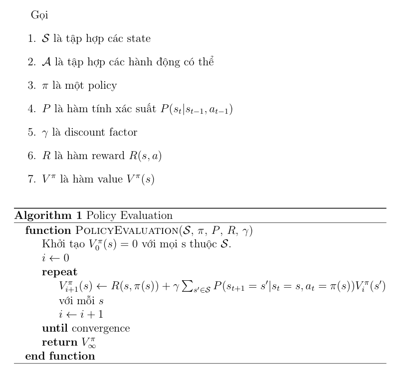 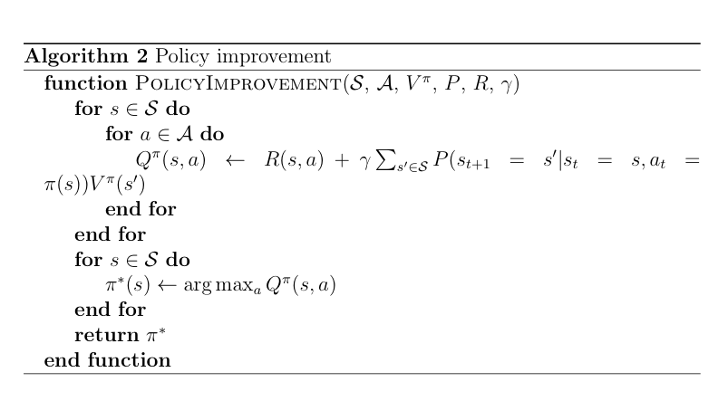 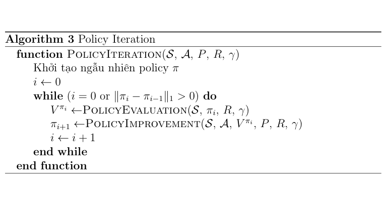
Nếu tính độ phức tạp của thuật toán này thì chúng ta giả sử ở thuật toán Policy Evaluation ta giới hạn lại số vòng lặp bằng 1 con số $N$ rất lớn và giả sử thuật toán Policy Iteration chạy với $k$ lần thì độ phức tạp của thuật toán sẽ là $\mathcal{O}(k\times N\times |\mathcal{S}|^2))$ nhỏ hơn so với việc vét cạn hết toàn bộ trường hợp rất nhiều. Tất nhiên cần phải lưu ý, tuy chặn trên của $k$ là $|\mathcal{S}|^{|\mathcal{A}|}$ nhưng trên thực tế, thuật toán Policy Iteration khám phá trong một không gian con nhỏ hơn rất nhiều so với việc vét cạn hết toàn bộ trường hợp. Tuy nhiên, một nhược điểm lớn nhất của thuật toán là tốc độ hội tụ tuy nhanh nhưng độ phức tạp của mỗi vòng lặp lại rất lớn (do thuật toán Policy Evaluation đòi hỏi một lượng lớn vòng lặp).
4.2. Thuật toán Value Iteration
Thuật toán Value Iteration xuất phát từ một ý tưởng cực kì đơn giản nhưng lại rất hữu hiệu. Quan sát thuật toán Policy Iteration, ta có thể thấy thuật toán duy trì cả hai hàm policy và value cùng một lúc, khiến cho việc tính toán trở nên cồng kềnh và mất thời gian. Thuật toán Value Iteration bắt đầu bằng việc cố gắng tối ưu hàm value function trước rồi policy ứng với hàm value tối ưu đó đương nhiên cũng sẽ là policy tối ưu. Nếu quan sát kĩ hơn nữa trong thuật toán Policy Iteration thì có thể thấy thuật toán Policy Iteration xây dựng một chuỗi các policy $(V^{\pi_i})_{i\geq 0}$ tăng dần và hội tụ về $V^\pi$ tối ưu. Nhưng như bạn thấy, thực chất cũng chả cần phải có $\pi_i$ để có thể tối ưu hoá $V^\pi$ mà chỉ cần chọn ra tạo ra giá trị ban đầu $V(s)=0$ với mỗi $s$ và chọn ra hành động $a$ để cho hàm $Q(s, a)$ đạt giá trị lớn nhất và cứ lặp lại liên tục thì chắc chắn cũng sẽ thu được $V$ cực đại. Như vậy, ta có thuật toán Value Iteration đơn giản như sau:
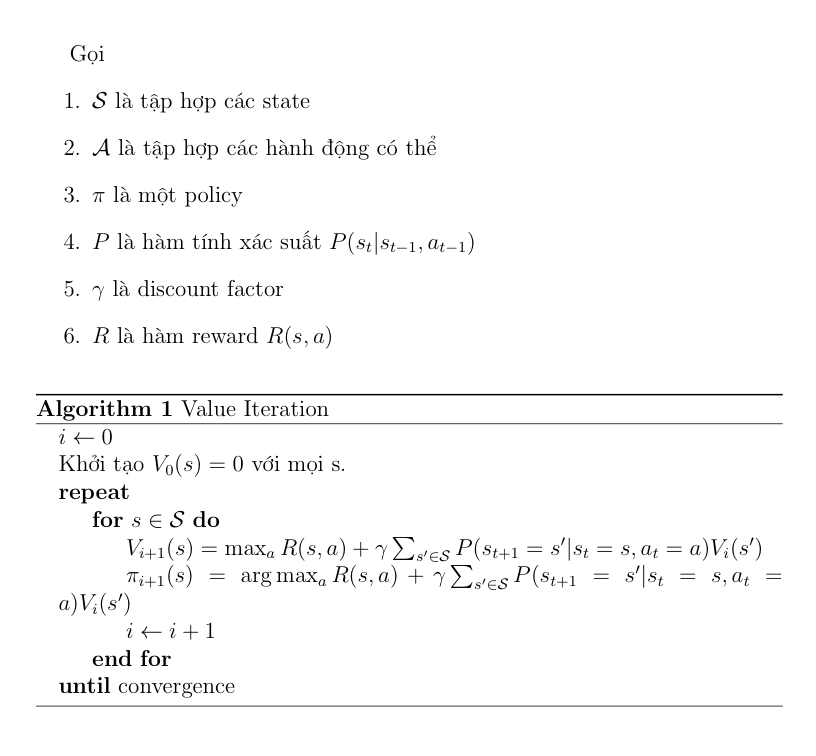
Ở trong thuật toán này, mỗi bước của thuật toán có độ phức tạp là $\mathcal{O}(|\mathcal{A}|\times |\mathcal{S}|^2)$, thấp hơn so với mỗi bước của thuật toán Policy Iteration ($\mathcal{O}(N\times|\mathcal{S}|^2)$ với $N\gg|\mathcal{A}|$). Tuy nhiên, tốc độ hội tụ của thuật toán lại chậm hơn so với thuật toán trên.
Sử dụng thuật toán Value Iteration và Policy Iteration vào bài toán tìm đường đi ngắn nhất trong ma trận vuông
Trước hết mình cần định nghĩa bài toán ma trận vuông mà mình cần giải.
Bài toán: Cho một ma trận vuông $n\times n$ với vị trí bắt đầu là ô vuông (0, 0) và vị trí kết thúc là ô vuông (n-1, n-1). Trong bảng ma trận, có một số ô vuông là cạm bẫy. Khi đi vào các ô cạm bẫy, xác suất để thoát ra được ô vuông đó là p (lưu ý là trong bài toán này agent dính bẫy sẽ không chết mà sẽ bị dính ở ô vuông đó cho đến khi thoát ra được, giống với một ô bùn). Hãy tìm đường đi hiệu quả để đi từ ô vuông ban đầu đến ô vuông kết thúc.
Dưới đây là một ví dụ minh hoạ cho bài toán:
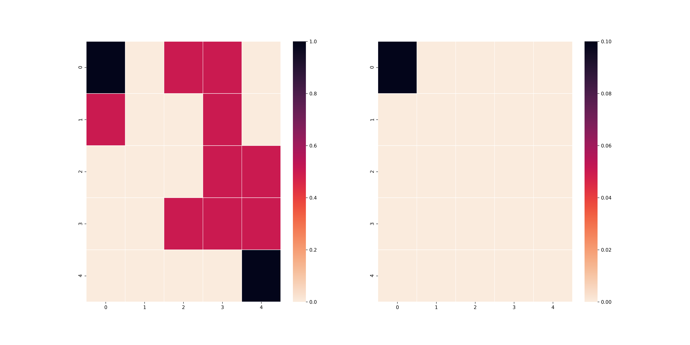
Ở trên hình có 2 bảng vuông, bảng bên trái là bảng có chứa thông tin về các ô vuông bẫy (đỏ), ô bắt đầu (đen) và ô kết thúc (đen) và bảng bên phải sẽ là bảng thể hiện trạng thái của agent (đen). Mình sẽ kí hiệu $M(T, p)$ đại diện cho bài toán trên với bảng vuông $T$ với xác suất thoát bẫy là $p$. Vì mục đích bảo trì mã, mình xin phép mỗi bài test sẽ là một bảng vuông khác nhau để cho các bạn thấy thuật toán của mình hoạt động đúng. Hai thuật toán Policy Iteration và Value Iteration mình code không sử dụng quá nhiều thư viện cao siêu (chủ yếu là numpy) và link github phần code mình sẽ up vào cuối bài viết.
Trước khi bước vào giải bài toán, mình sẽ phát biểu mô hình Markov của bài toán này:
- $\mathcal{S}$ sẽ bao gồm $n\times n$ toạ độ của các ô vuông với ô vuông bắt đầu là (0, 0) và ô vuông kết thúc $(n-1, n-1)$
- $\mathcal{A}$ sẽ bao gồm 4 thao tác chính: lên, xuống, trái, phải.
-
Định nghĩa phân phối $P(s_{t+1}|s_t, a_t)$:
- $P(s_{t+1} = (i’, j’) | s_t = (i, j), a_t=a) = 0$ nếu thực hiện hành động $a$ lên $(i, j)$ không thể đến được $(i’, j’)$
- $P(s_{t+1} = (i’, j’) | s_t = (i, j), a_t=a) = p$ nếu $(i, j)$ là ô bẫy và $(i, j)$ đến được $(i’, j’)$ thông qua $a$ (tất nhiên điều đó có nghĩa là $P(s_{t+1}=(i, j) | s_t=(i, j), a_t=a) = 1-p$).
- $P(s_{t+1} = (i’, j’) | s_t = (i, j), a_t=a) = 1$ nếu $(i, j)$ không là ô bẫy và $(i, j)$ đến được $(i’, j’)$ thông qua hành động $a$.
- Reward: Trong phần test này mình sẽ test 2 hàm reward để cho các bạn thấy hàm reward sẽ ảnh hưởng nhiều đến nghiệm của bài toán. Hai hàm reward đó là:
- $R_{l_1}((i, j), a) = \dfrac{1}{1 + |i - n + 1| + |j - n + 1|}$
- $R_{l_2}((i, j), a) = \dfrac{1}{1 + \sqrt{(i - n + 1)^2 + (j - n + 1)^2}}$
- Discounted factor $\gamma$: Mình sẽ test luôn cả ảnh hưởng của $\gamma$ lên các thuật toán để cho các bạn thấy thế nào là các policy ngắn hạn và dài hạn.
Ảnh hưởng của hàm reward lên kết quả của bài toán
Trong phần này, mình sẽ không sử dụng các ô vuông bẫy để cho các bạn có thể thấy hai kết quả nó sẽ khác nhau như thế nào. Như vậy, bảng vuông $T$ của mình sẽ có dạng như sau:
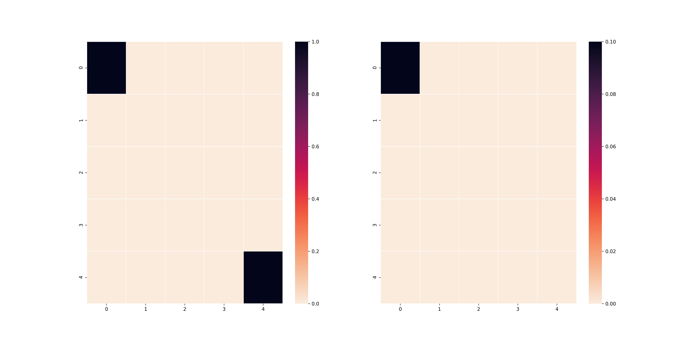
Nếu các bạn tinh ý và các bạn có kiến thức nền về toán, $R_{l_1}((i, j), a)$ thực chất là reward cho các ô vuông dựa trên độ xa gần của ô vuông đó đến ô vuông cuối theo khoảng cách $L_1$ và $R_{l_2}((i, j), a)$ thực chất là reward cho các ô vuông dựa trên độ xa gần của ô vuông đó đến ô vuông cuối theo khoảng cách $L_2$. Theo đó, nếu đúng theo lí thuyết, agent của chúng ta trong trường hợp $L_1$ sẽ đi men theo cạnh của bảng và trong trường hợp $L_2$ sẽ đi men theo đường chéo chính. Đây là kết quả của thuật toán Policy Iteration khi sử dụng hai reward khác nhau (với $\gamma = 0.9$).
L1 reward 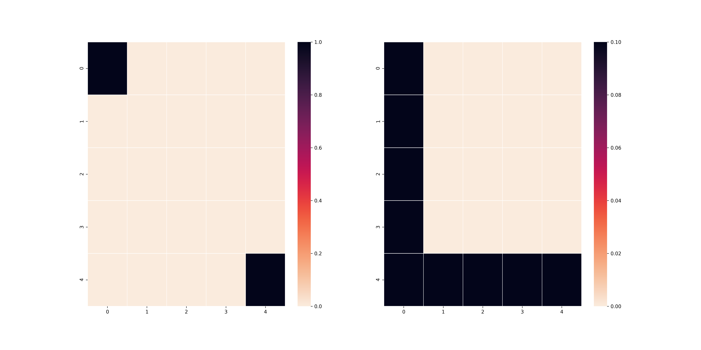
L2 reward 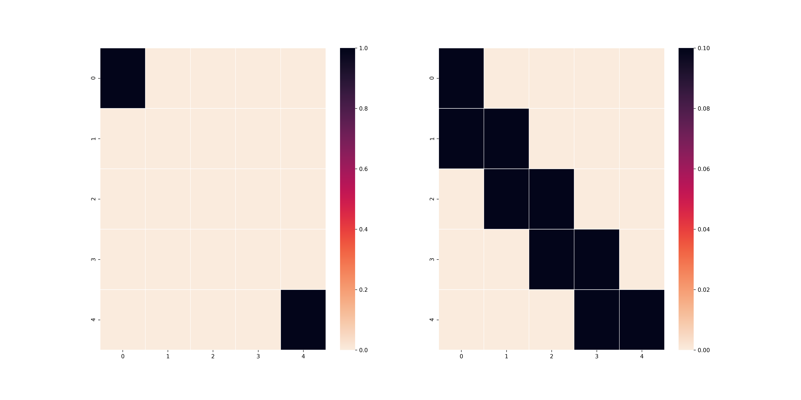
Thuật toán Value Iteration cũng cho ra kết quả tương tự (cũng với $\gamma$ như trên).
L1 reward
L2 reward
Điều này chứng tỏ rằng việc chọn hàm reward là một việc quan trọng để có thể tìm thấy nghiệm phù hợp với bài toán. Như các bạn thấy, việc chọn 2 công thức tính khoảng cách khác nhau đã tạo ra 2 nghiệm hoàn toàn khác nhau cho bài toán. Trong trường hợp bẫy xuất hiện, một số trường hợp sử dụng $L_1$ sẽ đảm bảo agent tìm được nghiệm bài toán hiệu quả hơn. Ví dụ như trong trường hợp dưới đây:
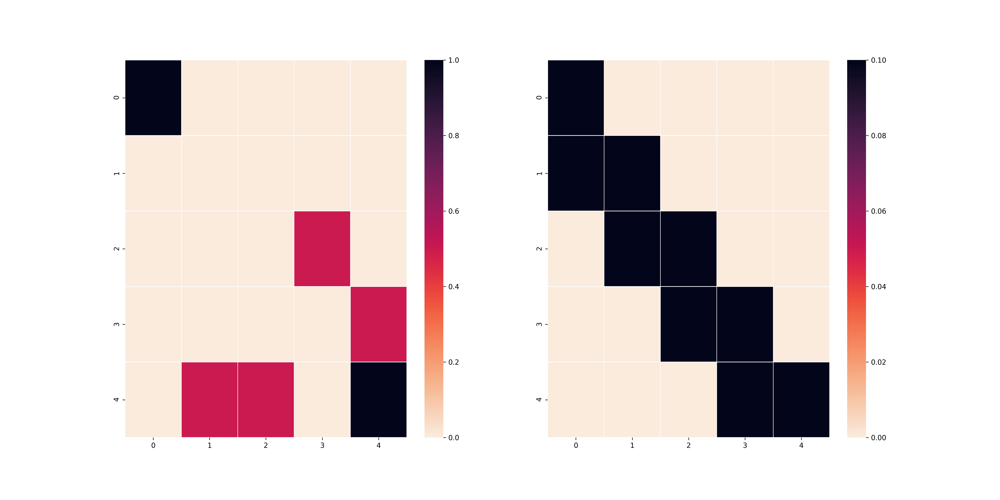
Rõ ràng lúc này chiến thuật chỉ đi theo đường chéo chứng tỏ ưu thế của mình khi bẫy bố trí ở gần mép bản đồ. Tất nhiên, điều đó cũng có nghĩa nếu bẫy tập trung ở gần tâm bản đồ thì việc sử dụng $L_1$ lại trở nên hữu hiệu.
Ảnh hưởng của discount factor lên policy tìm ra
Dưới đây là bảng $T$ mà mình sử dụng, mình sẽ test trên $L_2$ reward, $L_1$ xin để giành cho bạn đọc.
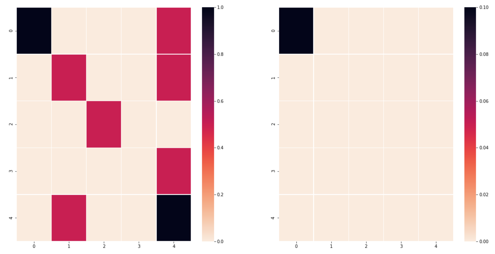
Và dưới đây là kết quả của việc sử dụng Policy Iteration trên bảng $T$ với $\gamma=0.1$ và $\gamma=0.9$.
$\gamma=0.1$
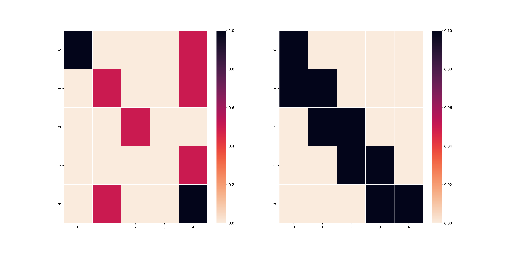
$\gamma=0.9$
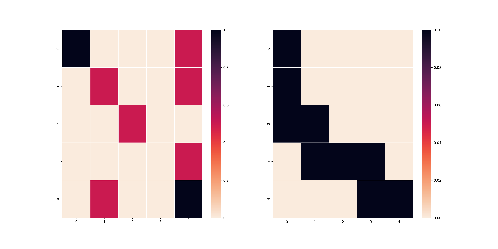
Như các bạn thấy, ở trường hợp trên, vì $\gamma$ nhỏ nên agent có xu hướng tối ưu hoá các bước đi ở những timestep gần nhất mà không để ý đến kết quả dài lâu, do đó agent vẫn đi theo lối cũ mặc dù sẽ dính rất nhiều cạm bẫy. Mặt khác, nếu bạn chọn $\gamma$ lớn như ở trường hợp dưới, agent sẽ suy nghĩ đến việc làm sao để các bước sau đi không gặp bẫy từ đó có thể đến được ô cuối.
Value Iteration và Policy Iteration: Hội tụ nhanh hay thực thi nhanh?
Cuối cùng, mình muốn cho các bạn thấy về ưu khuyết điểm của thuật toán Policy Iteration và thuật toán Value Iteration. Mình cần nhắc là hai thuật toán này luôn đảm bảo độ hội tụ về nghiệm tối ưu, chứng minh sẽ ở phần Phụ lục. Mình test đơn giản trên con Mac OS X với processor 2.5 GHz Quad-Core Intel Core i7. Bảng $T$ lúc này sẽ là bảng không có bẫy như bài test đầu tiên nhưng với kích thước $10\times 10$. Lúc này, $\gamma=0.9$. Mình sẽ test cả 2 thuật toán trên cả $L_1$ và $L_2$ để cho thấy ưu nhược điểm của mỗi cái.
| Test | #iterations | each iteration time |
|---|---|---|
| L1 + Policy Iteration | 5 | 8.13s |
| L2 + Policy Iteration | 5 | 8.51s |
| L1 + Value Iteration | 173 | 0.13s |
| L2 + Value Iteration | 173 | 0.13s |
Rõ ràng như các bạn đã thấy, thuật toán Value Iteration đòi hỏi nhiều vòng lặp (gấp 34.6 lần) thuật toán Policy Iteration để có thể hội tụ đến policy tối ưu nhưng bù lại, mỗi vòng lặp chỉ tiêu tốn khoảng 0.13s tức là nhỏ hơn gần 65 lần so với thuật toán Policy Iteration. Lí do như mình đã giải thích, thuật toán Policy Iteration tập trung vào việc tính toán hàm value rồi từ đó cải thiện policy, việc này đòi hỏi một lượng lặp rất lớn (trong trường hợp của mình là khoảng tầm 100 vòng lặp). Trong khi đó, thuật toán Value Iteration chỉ tập trung tối ưu hoá hàm value rồi trích xuất policy từ đó, do đó, lượng công thức tính toán ít nhưng đổi lại tốc độ hội tụ khá chậm. Thuật toán value iteration sẽ rất thích hợp trong các bài toán finite-horizon, tức là các bài toán đòi hỏi giới hạn về số bước thực hiện vì lúc này environment sẽ bị giới hạn, do đó sử dụng một lượng lớn vòng lặp chỉ để tính policy tối ưu không phải là một phương án hay. Và ngược lại, Policy Iteration lại phù hợp cho các bài toán không giới hạn về bước thực hiện mà chỉ quan tâm đến kết quả vì lúc này chi phí lấy mẫu từ environment đã trở nên rất đắt.
5. Kết luận
Vậy là mình đã hoàn thành việc giới thiệu sơ qua cho các bạn về bài toán Reinforcement Learning và cách giải bài toán này trong trường hợp biết mô hình tương tác giữa các state trong môi trường (hay còn gọi là mô hình chuỗi Markov). Đó chính là hai thuật toán Value Iteration và Policy Iteration. Cả hai thuật toán đều tốt hơn so với cách vét cạn nhưng lại chú trọng vào hai đối tượng khác nhau. Policy Iteration chú trọng vào tối ưu hoá một policy chưa tối ưu thông qua việc cực đại hoá hàm state action. Ngược lại, Value Iteration chú trọng vào việc cực đại hoá hàm state value và thông qua đó trích xuất policy tối ưu. Mình đã test cho các bạn thấy ưu nhược điểm của cả hai: Policy Iteration hội tụ nhanh những chi phí mỗi vòng lặp đắt trong khi Value Iteration lại hội tụ lâu với chi phí mỗi vòng lặp rẻ. Tuy nhiên, cả hai thuật toán này chỉ hữu dụng khi giải quyết các bài toán đã biết trước mô hình. Trong trường hợp chưa biết trước mô hình, chúng ta cần các kĩ thuật khác mà mình sẽ đề cập ở bài viết sau.
Phụ lục
Như bài blog trước của mình, phần này sẽ dành cho những bạn thích Toán và muốn biết thêm tại sao hai thuật toán trên có thể hoạt động đúng và đảm bảo hội tụ. Trước hết, chúng ta cần chứng minh rằng tồn tại policy tối ưu để hàm $V^{\pi_i}(s)$ đạt giá trị lớn nhất với mọi $s$. Điều này có thể dễ dàng suy ra được vì chỉ có hữu hạn hành động và state nên sẽ tồn tại một tập các hành động ứng với state để hàm value lớn nhất.
Tiếp theo, như mình nói ở phần 4.1, thuật toán Policy Iteration hoạt động dựa trên nguyên tắc liên tục cải thiện policy chưa tối ưu. Do đó mình cần phải chứng minh bổ đề sau:
Bổ đề 1: $(V^{\pi_i}(s))$ là một dãy tăng với mọi $s\in\mathcal{S}$.
Chứng minh: Mình kí hiệu $G_t=r_t+\gamma r_{t+1}+ \gamma^2r_{t+2} + \ldots$. Như vậy, dễ thấy $V^{\pi_i}(s) = \mathbb{E}[G_t|s_t=s, a_t=\pi_i(s)] = Q^{\pi_i}(s, \pi(s))$. Theo thuật toán Policy Iteration thì
Từ đó, ta có điều phải chứng minh (lưu ý, biến đổi từ dòng 3 sang 4 và 6 sang 7 là hệ quả của kì vọng lặp).
Chính vì $(V^{\pi_i}(s))_{i\geq 0}$ là một dãy tăng và bị chặn trên nên nó hội tụ về chặn trên đúng của dãy đó là policy tối ưu (hệ quả của định lí Bolzano-Weierstrass). Từ đó, ta chứng minh được thuật toán Policy Iteration hội tụ.
Để chứng minh thuật toán Value Iteration luôn hội tụ thì ta cần một số bổ đề sau:
Bổ đề 2: Chứng minh rằng với mọi hàm số $f$ và $g$ ta có
Chứng minh: Gọi $x^*=\arg\max_x f$ và không mất tính tổng quát, giả sử $max f\geq\max g$. Từ đó, ta có $VT = f(x^*) - \max g\leq f(x^*) - g(x^*)\leq\max |f - g|.$
Như vậy, theo thuật toán Value Iteration, ta sẽ có được:
Cho $i\to\infty$ thì ta có được $\lim_{i\to\infty}\lVert V_{i+1}(s) - V_i(s)\rVert_\infty = 0$. Từ đó suy ra được thuật toán này hội tụ về hàm value tối ưu và từ đó có thể trích xuất ra policy tối ưu.